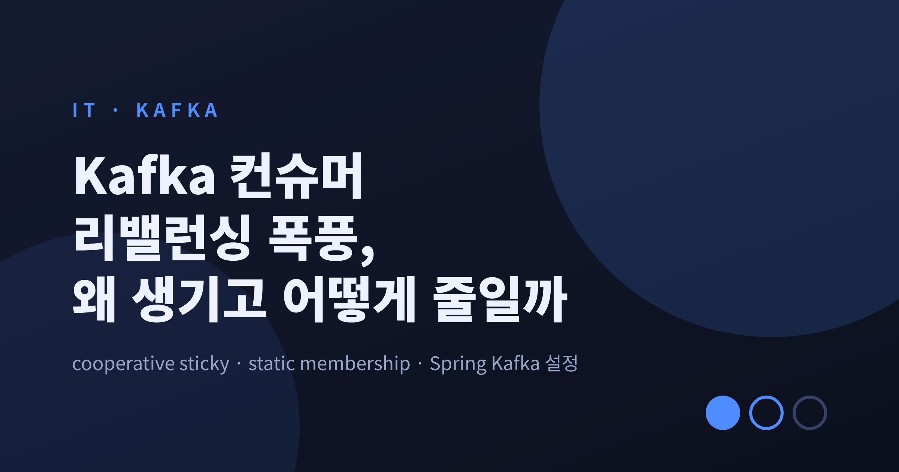
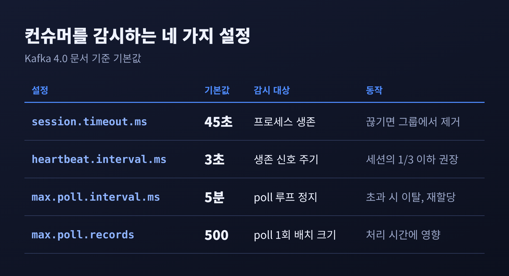
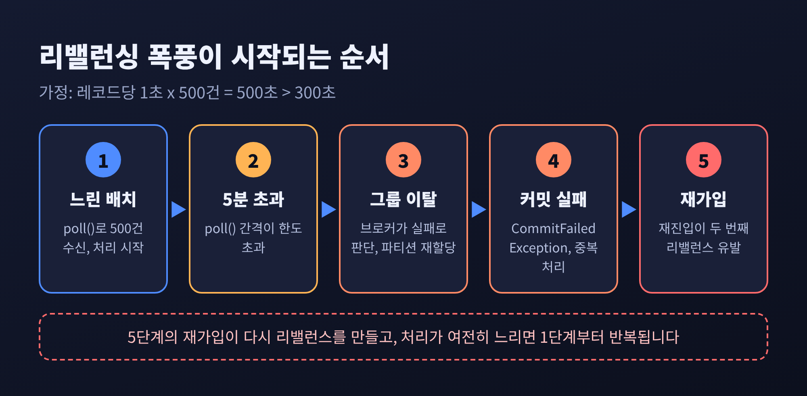
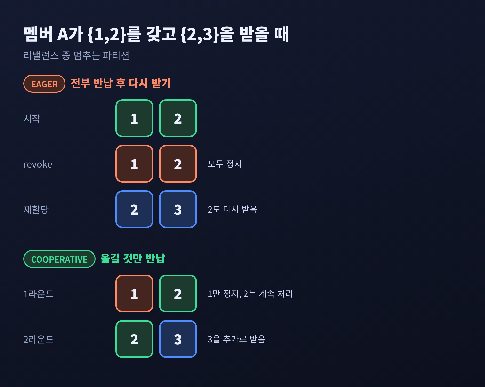
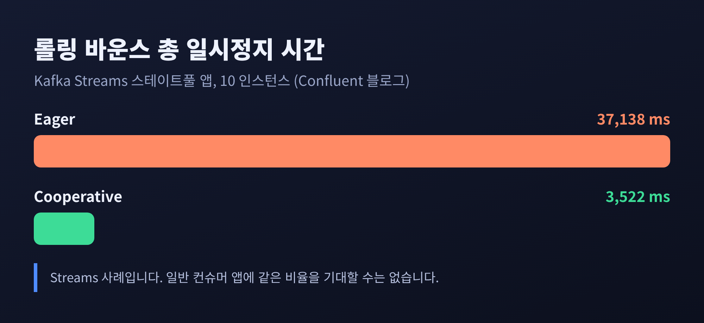
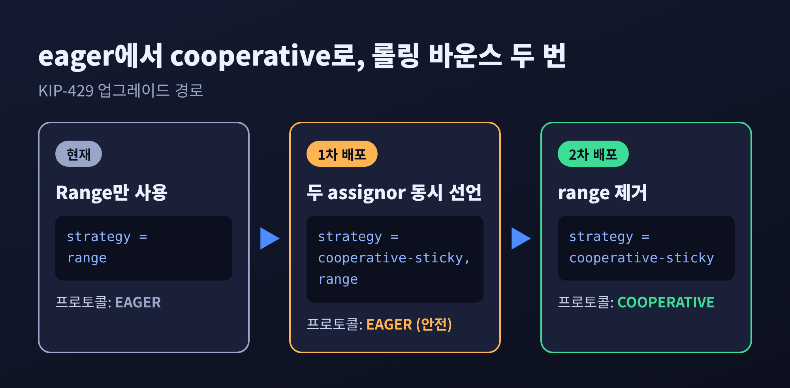
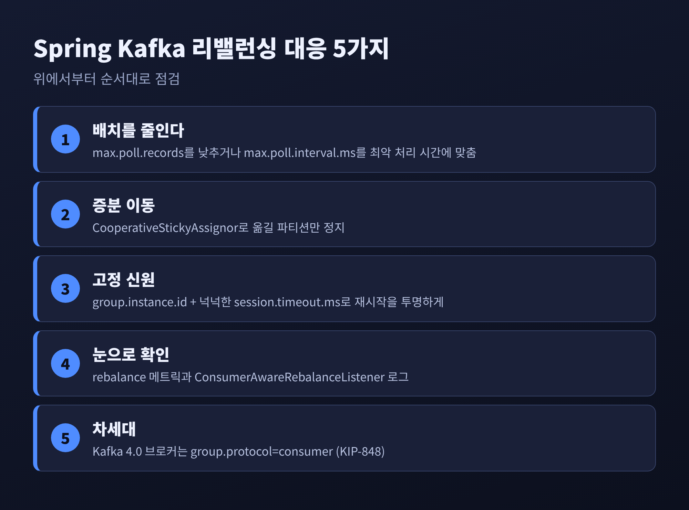

3줄 요약
- 리밸런싱 폭풍의 뿌리는 대개 max.poll.interval.ms(기본 5분)를 넘긴 느린 배치와, 재시작마다 반복되는 그룹 이탈·재가입입니다.
- Cooperative sticky는 옮겨지는 파티션만 멈추게 하고, static membership은 짧은 재시작을 리밸런스 없이 넘기게 합니다.
- Spring Kafka에서는 max.poll.records, session.timeout.ms, group.instance.id를 함께 조율하는 것이 핵심입니다.
이번 글에서는 Kafka 컨슈머 그룹 리밸런싱이 어떤 원리로 일어나고, 왜 폭풍처럼 번지는지 정리해 보려 합니다. eager와 cooperative sticky 프로토콜의 차이, static membership, 그리고 Spring Kafka에서 쓸 수 있는 설정까지 순서대로 다룹니다. 수치와 설정 이름은 Apache Kafka 4.0 문서와 KIP, Spring Kafka 레퍼런스를 근거로 했습니다.
■ 세 개의 타이머가 컨슈머의 생사를 가른다
리밸런싱을 이해하려면 먼저 컨슈머를 감시하는 타이머 세 개를 구분해야 합니다.

Kafka 4.0 문서 기준 기본값은 이렇습니다.
session.timeout.ms는 45초, heartbeat.interval.ms는 3초, max.poll.interval.ms는 5분, max.poll.records는 500입니다.
heartbeat 간격은 세션 타임아웃보다 작아야 하고, 문서는 보통 그 값의 3분의 1 이하를 권합니다.
예전에는 heartbeat와 레코드 처리가 한 스레드에서 돌았습니다.
처리가 세션 타임아웃보다 길어지면 곧바로 그룹에서 쫓겨났습니다.
KIP-62가 백그라운드 heartbeat 스레드를 도입하면서 역할이 갈렸습니다.
세션 타임아웃은 프로세스가 죽었는지를 보고, max.poll.interval.ms는 poll 루프가 멈췄는지를 봅니다.
여기서 기억할 점이 하나 있습니다.
heartbeat 스레드가 살아 있어도 poll()을 5분 안에 다시 부르지 못하면 컨슈머는 실패한 것으로 처리됩니다.
Spring 개발자가 가장 자주 만나는 함정이 이 지점입니다.
■ 리밸런싱 폭풍은 이렇게 시작됩니다
폭풍은 대부분 정상 동작처럼 보이는 작은 계기에서 출발합니다.

대표적인 시나리오는 이렇습니다.
기본 설정에서 poll() 한 번에 최대 500건이 넘어옵니다.
레코드 한 건에 외부 API 호출이 끼어 평균 1초가 걸린다고 가정해 보겠습니다.
500건이면 500초이고, 한도인 300초를 넘깁니다. (계산을 위한 가정 값입니다.)
그러면 브로커는 컨슈머를 죽은 것으로 보고 파티션을 다른 멤버에게 넘깁니다.
뒤늦게 오프셋을 커밋하면 CommitFailedException이 납니다.
메시지에는 "poll() 호출 간격이 설정된 max.poll.interval.ms보다 길었다"는 취지의 문구가 담깁니다.
이미 처리한 레코드는 새 소유자가 다시 처리하게 됩니다.
KIP-735는 가짜 장애가 만드는 두 번의 리밸런스를 짚습니다. 멤버가 빠질 때 한 번, 다시 들어올 때 한 번입니다. 같은 파티션을 받은 다른 컨슈머도 같은 느린 처리를 만난다면 같은 길을 걸을 수 있습니다. 이 연쇄는 제 해석이며, 문서가 직접 서술한 내용은 아닙니다.
롤링 배포도 같은 구조입니다. 인스턴스를 하나 내릴 때마다 이탈과 재가입이 일어나고, 그때마다 리밸런스가 생깁니다. KIP-345가 밝힌 동기가 바로 이 느린 롤링 재시작입니다.
■ Eager의 정지 시간, Cooperative의 증분 이동
기본 방식인 eager 프로토콜은 리밸런스 때마다 보유 파티션을 전부 반납합니다. 한 파티션에는 소비자가 하나여야 한다는 보장 때문입니다. 소유자가 놓기 전에는 새 소유자에게 줄 수 없으니, 옮길 필요가 없던 파티션까지 모두 멈춥니다. JoinGroup을 보낸 순간부터 SyncGroup 응답을 받을 때까지 컨슈머는 아무것도 처리하지 못합니다.
KIP-429의 cooperative 프로토콜은 리밸런스를 두 번으로 나눕니다.

1라운드에서 각 멤버는 보유 파티션을 유지한 채 가입합니다. 리더는 기존 소유 정보와 새 할당안을 비교해 옮겨야 할 파티션만 기존 소유자에게서 걷어냅니다. 2라운드에서 걷어낸 파티션이 최종 소유자에게 갑니다. 문서의 예로, {1, 2}를 가진 멤버가 {2, 3}을 받으면 1만 revoke 되고 2는 끊김 없이 처리됩니다.
Confluent 블로그의 표현대로 동기화 장벽이 사라진 것은 아닙니다. 옮겨졌을 뿐입니다. 다만 장벽에 걸리는 범위가 이동 대상 파티션으로 줄어듭니다. 이 효과를 내려면 assignor가 sticky여야 합니다. 기존 할당을 최대한 보존하지 않으면 cooperative가 eager처럼 퇴화합니다.
수치도 있습니다. Confluent가 스테이트풀 Kafka Streams 앱 10개 인스턴스를 롤링 바운스한 실험에서 총 일시정지 시간은 eager 37,138ms, cooperative 3,522ms였습니다. 약 10배 차이입니다.

다만 Streams 사례이고, 일반 컨슈머 앱에 같은 비율을 기대할 수는 없습니다. 한계를 분명히 해 두겠습니다.
콜백 동작도 달라집니다.
cooperative에서는 onPartitionsRevoked가 리밸런스 끝에, revoke 대상이 있을 때만 호출됩니다.
onPartitionsAssigned는 빈 집합이어도 리밸런스가 끝날 때마다 한 번 호출되며, 새로 추가된 파티션만 전달됩니다.
"리밸런스 시작"을 revoke 콜백으로 감지하던 코드는 손봐야 합니다.
■ 기본 설정으로는 아직 eager일 수 있습니다
Kafka 4.0 문서의 partition.assignment.strategy 기본값은 RangeAssignor, CooperativeStickyAssignor입니다.
KIP-726이 이 기본값을 정리한 제안이었는데, 제안서 제목의 나열 순서는 "cooperative-sticky, range"로 문서와 다릅니다. 두 소스가 어긋나 있으니 순서는 단정하지 않겠습니다.
분명한 것은 Range가 eager 전용이라는 점입니다. 목록에 Range가 들어 있는 한, 그룹의 모든 멤버가 cooperative만 지원하게 될 때까지 프로토콜은 EAGER로 남습니다. 아래처럼 명시적으로 지정해 확인하시길 권합니다.

KIP-429가 설명한 전환 절차는 롤링 바운스 두 번입니다.
1차에서 cooperative-sticky, range로 바꿔 배포합니다. 이때도 프로토콜은 EAGER입니다.
모두 바뀐 뒤 2차에서 range를 제거하면 COOPERATIVE로 넘어갑니다.
KIP-726의 목적이 이 번거로운 두 단계를 없애는 것이었다는 점도 참고하실 만합니다.
Spring Boot 설정으로는 다음과 같이 쓸 수 있습니다. (설정 이름은 Kafka 문서 기준이며, 실제 앱에서 실행해 검증한 예시는 아닙니다.)
spring:
kafka:
consumer:
group-id: order-service
properties:
partition.assignment.strategy: org.apache.kafka.clients.consumer.CooperativeStickyAssignor
max.poll.records: 100
max.poll.interval.ms: 300000
■ Static membership으로 재시작을 투명하게 만들기
KIP-345의 static membership은 컨슈머에 고정 신원을 줍니다.
group.instance.id를 비어 있지 않은 문자열로 지정하면 static 멤버가 됩니다.
인스턴스마다 값이 고유해야 하고, 호스트명이 한 예입니다.
static 멤버는 종료할 때 LeaveGroup을 보내지 않습니다.
세션 타임아웃이 지나야 비로소 제거됩니다.
그 안에 같은 ID로 돌아오면 브로커가 기존 할당을 그대로 돌려주고 리밸런스는 일어나지 않습니다.
그래서 문서는 session.timeout.ms를 짧은 재시작이 끼어들 만큼 크게 잡으라고 권합니다.
브로커의 group.max.session.timeout.ms 기본 상한이 30분인 것도 이런 쓰임을 염두에 둔 값입니다.
대가도 있습니다.
KIP는 liveness보다 state persistence를 우선한다고 밝힙니다.
static 멤버가 정말 죽었다면 세션 타임아웃이 만료될 때까지 그 파티션은 처리되지 않습니다. 이 점은 문서 설계에서 제가 이끌어 낸 해석입니다.
같은 ID를 가진 두 번째 인스턴스가 들어오면 FENCED_INSTANCE_ID(에러 코드 78)로 거절됩니다. 대개 설정 중복 버그입니다.
계획된 스케일 다운에는 AdminClient.removeMemberFromConsumerGroup으로 멤버를 직접 제거해 기다림을 줄일 수 있습니다.
Spring Kafka는 concurrency가 1보다 클 때 static membership을 지원합니다(2.3.8, 2.4.6부터).
group.instance.id 뒤에 -1, -2처럼 번호가 붙고, 번호는 1부터 시작합니다.
문서는 늘린 session.timeout.ms와 함께 쓰라고 안내합니다.
spring:
kafka:
consumer:
properties:
group.instance.id: ${HOSTNAME} # Pod 이름 등 인스턴스별 고유값
session.timeout.ms: 120000 # 예시 값: 재시작 소요 시간에 맞춰 조정
heartbeat.interval.ms: 15000 # 세션의 1/3 이하
listener:
concurrency: 3 # 컨테이너별 -1, -2, -3 접미
앞서의 listener.concurrency 같은 Spring Boot 프로퍼티 이름은 일반 지식에 기댄 것이어서, 적용 전 Boot 문서로 한 번 확인해 주세요.
■ Spring Kafka에서 실무로 옮기면
설정을 한곳에 모으면 우선순위가 보입니다.

첫째, 느린 배치부터 다룹니다.
max.poll.records를 낮추거나 max.poll.interval.ms를 최악의 배치 처리 시간에 맞춥니다. KIP-62와 CommitFailedException 해설이 같은 방향입니다.
Spring의 idleBetweenPolls는 설정값과 "max.poll.interval.ms에서 현재 배치 처리 시간을 뺀 값" 중 작은 쪽만큼만 쉬도록 조정되어, 쉬는 시간이 한도를 잠식하지 않습니다.
다만 nack()은 해당 리스너가 맡은 모든 파티션을 sleep 동안 멈춘다는 점을 기억해 두셔야 합니다.
둘째, 멀티 토픽을 구독한다면 기본 RangeAssignor가 놀고 있는 컨슈머를 만들 수 있습니다. Spring 문서는 RoundRobinAssignor를 제안합니다. 다만 round-robin은 sticky가 아니라 cooperative와 어울리지 않으므로, 쓰임새를 저울질해야 합니다.
셋째, 리밸런스를 눈으로 보이게 합니다.
리스너를 지정하지 않으면 컨테이너는 리밸런스를 INFO 로그로 남깁니다.
오프셋을 외부에 저장해야 한다면 ConsumerAwareRebalanceListener의 onPartitionsRevokedBeforeCommit과 AfterCommit을 구분해 쓸 수 있습니다.
onPartitionsLost(2.4부터)에서 onPartitionsRevoked로 위임하면 컨테이너가 이미 호출하는 탓에 두 번 실행되니 피해야 합니다.
넷째, Kafka 4.0 브로커라면 group.protocol=consumer로 KIP-848 프로토콜을 쓸 수 있습니다.
코디네이터가 목표 할당을 계산하고 멤버가 증분으로 맞춰 가므로, 전체를 세우는 장벽이 없습니다.
Spring Kafka 4.0이 이를 지원하며, 이때는 onPartitionsAssigned가 작은 집합으로 여러 번 불릴 수 있습니다.
클라이언트 측 커스텀 assignor는 무시되고 경고가 남습니다.
클라이언트 측 assignor는 아직 구현되지 않았고, 이 프로토콜에서는 클라이언트의 session.timeout.ms가 지원되지 않아 서버의 group.consumer.session.timeout.ms(기본 45초)를 따릅니다.
정리하면 이렇습니다.
리밸런싱을 없앨 수는 없습니다. 줄일 수 있을 뿐입니다.
느린 배치는 max.poll.records로, 전체 정지는 cooperative sticky로, 재시작 충격은 static membership으로 나누어 대응합니다.
"리밸런스를 막으려 하지 말고, 리밸런스가 아프지 않게 만든다."
한 가지는 미리 말씀드립니다.
이 글의 수치는 문서와 공개 벤치마크에서 가져왔고, 여러분의 클러스터에서 같은 효과가 나는지는 직접 측정해야 합니다.
rebalance-total, rebalance-latency-avg 같은 메트릭을 먼저 확인해 보시면 어디부터 손댈지가 보일 것입니다.